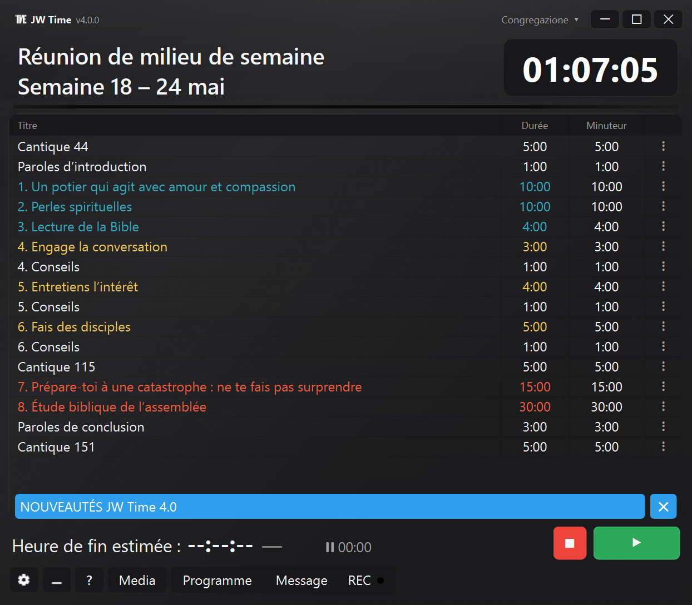
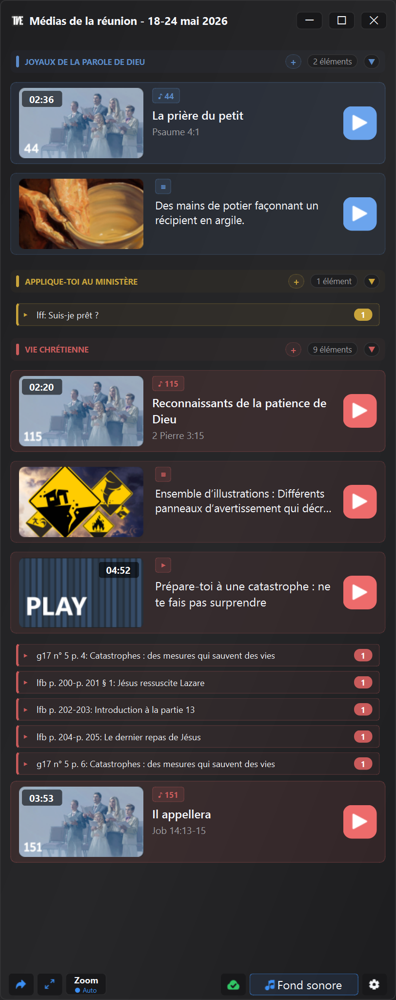

Version 4.0.0
Disponible le 3 juin 2026Médias intégrés, Écran Public, profils de congrégation, moniteur Web télécommandé, enregistrement plus flexible et outils plus complets pour la préparation des réunions.
La version 4.0.0 ajoute à JW Time des outils de support pour préparer et vérifier les contenus disponibles, les afficher sur l'Écran Public et gérer les minuteries, les médias et l'enregistrement avec moins d'étapes manuelles.
Les fonctions prévues pour la version 3.0 ont fusionné dans la version 4.0.0, ainsi que le nouveau système Media, l'Écran Public et les profils de congrégation. C'est pourquoi l'historique passe directement de la 2.1.0 à la 4.0.0.
Vous trouverez ci-dessous les principales innovations, avec des exemples concrets de ce qui change dans l'utilisation réelle de l'application.


Aperçu de la nouvelle interface et fenêtre Média de JW Time 4.0.
En bref NOUVEAU
- Affichez et organisez des images, des vidéos, des PDF, des URL, des chansons et du contenu officiel déjà disponible avec le support de la fenêtre Média.
- Affichez le contenu multimédia et visuel sur un Écran Public distinct du compteur de temps.
- Personnalisez l'écran du compteur de temps avec des préréglages, des éditeurs, des arrière-plans, des couleurs, un logo, une horloge et des niveaux.
- Utilisez des profils de congrégation distincts pour les écrans, les fenêtres, les serveurs, l'enregistrement, les médias et la mise en page.
- Ouvrez le moniteur Web via QR et, si autorisé, vérifiez la minuterie et la liste de lecture depuis le navigateur.
- Préparez des packages et des sauvegardes plus complets pour travailler hors ligne ou déplacer votre configuration.
Médias et préparation de la réunion NOUVEAU
La fenêtre Média offre un outil de support pour préparer et vérifier plus facilement les contenus disponibles.
Remarque : la fenêtre Média est une fonction de support technique. Elle permet de préparer et de vérifier plus facilement les contenus disponibles, mais son utilisation pratique reste toujours liée aux besoins locaux, aux indications de la congrégation et aux dispositions.
- Ajoutez des fichiers locaux, des images, des vidéos, des PDF et des URL.
- Consultez les chansons, les médias officiels et le contenu lié à la semaine.
- Organisez le contenu manuel en groupes et réorganisez les éléments selon le calendrier.
- Vérifiez à l'avance ce qui est disponible et ce qui manque.
- Ouvrez ou affichez le contenu sur l'Écran Public sans le rechercher dans différents dossiers.
Médias, playlists et packages officiels NOUVEAU
JW Time peut aider à organiser et réutiliser du contenu officiel déjà disponible et du contenu local de manière plus ordonnée, même lorsqu'il faut travailler hors ligne.
- Téléchargez et réutilisez les médias officiels déjà présents localement.
- Gérez un cache dédié aux chansons officielles, avec contrôles de disponibilité.
- Importez des listes de lecture et connectez du matériel déjà préparé.
- Créez ou utilisez des packs multimédias avec des fichiers locaux, des URL, des images et du contenu officiel.
- Ouvrez Media Checker pour voir les fichiers manquants, le contenu hors ligne, les problèmes et les tailles locales.
- Copiez les détails de la vérification lorsque vous devez vérifier ou partager un problème.
Note importante : le chemin alternatif introduit dans JW Time 2.1.0 concerne les programmes hebdomadaires et de week-end. Pour les médias officiels, il n'existe pas de second serveur de récupération. Si un routeur, un pare-feu, un DNS ou un filtre de contenu bloque l'accès de JW Time à jw.org ou aux sites religieux, la fenêtre Média peut ne pas parvenir à télécharger les médias officiels. Les fichiers déjà téléchargés, les médias locaux et le contenu ajouté manuellement restent utilisables.
Écran du compteur de temps et Écran Public NOUVEAU
Les affichages ont été séparés : le Compteur de Temps est pour le chef d'orchestre, l'Écran Public est pour la salle.
- Commencez à partir des préréglages prêts pour l'écran du compteur de temps.
- Modifiez la mise en page, les calques, les couleurs, les arrière-plans, le logo, l'horloge et les textes avec l'éditeur.
- Affichez des images, des PDF, des vidéos et du contenu visuel sur l'Écran Public.
- Gardez le minuteur visible par l'hôte, séparé du contenu présenté au public.
- Récupère mieux les fenêtres hors écran et les configurations de moniteur modifiées.
Congrégations, profils et sauvegardes NOUVEAU
Les profils de congrégation évitent d'avoir à reconfigurer JW Time lorsque l'application est utilisée dans des contextes différents.
- Gardez la langue, le thème, l'échelle de l'interface, les écrans et les fenêtres séparés.
- Enregistrez différentes configurations pour le serveur Web, l'enregistrement, les médias et la mise en page.
- Importez, exportez et dupliquez des profils pour préparer des configurations similaires.
- Transférez les paramètres vers un autre ordinateur avec des sauvegardes plus complètes.
- Les paramètres existants sont migrés vers le premier profil.
Serveur web et télécommande NOUVEAU
Le Serveur web ne peut être utilisé que pour visualiser le programme ou, si autorisé, pour intervenir depuis le navigateur.
- Ouvrez Web Monitor depuis votre téléphone, tablette ou autre ordinateur sur le même réseau.
- Utilisez le QR pour atteindre plus rapidement l'adresse du serveur Web.
- Suivez la minuterie, le calendrier et l'heure de fin estimée en temps réel.
- Avec le rôle de contrôleur, vous pouvez démarrer, arrêter, passer à la partie suivante et modifier les valeurs disponibles dans la playlist.
- Protégez l'éditeur, le contrôleur et l'accès à distance avec un code PIN si nécessaire.
Enregistrement et audio AMÉLIORÉ
L'enregistrement a été mieux adapté au déroulement réel de la réunion, où les pauses, les reprises et les vérifications rapides peuvent être utiles.
- Gérez la pause et reprenez l'enregistrement plus directement.
- Meilleur contrôle des périphériques audio configurés.
- Consultez les informations utiles sur le bouton REC et les niveaux audio.
- Intégrez l'enregistrement, les médias et la minuterie sans ouvrir de panneaux inutiles.
Paramètres, assistant de démarrage et interface AMÉLIORÉ
Les paramètres ont été réorganisés par région et l'assistant de démarrage vous aide à configurer les parties essentielles.
- Configurez la langue, les affichages, le serveur, la sauvegarde et les options principales lors du premier démarrage.
- Retrouvez plus facilement le thème, l'échelle de l'interface et la langue du programme.
- Utilisez des panneaux de paramètres distincts pour les médias, le zoom, le serveur Web, les enregistrements et les sauvegardes.
- Consultez la fenêtre Quoi de neuf au sein de l'application même après le premier lancement.
Stabilité et correctifs CORRECT
De nombreux correctifs concernent des situations pratiques pouvant survenir lors d'une utilisation hebdomadaire.
- Fenêtres mieux mémorisées et récupération plus fiable après les changements de moniteur.
- Fermeture de l'application plus propre, même avec les serveurs, les médias et les écrans ouverts.
- Gestion plus stable de l'Écran Public, du serveur Web, des médias et de l'enregistrement.
- Téléchargements améliorés, cache multimédia, chemins locaux et fichiers temporaires.
- États d'application plus cohérents lors du changement de semaines, de langues, de congrégations ou d'horaires.